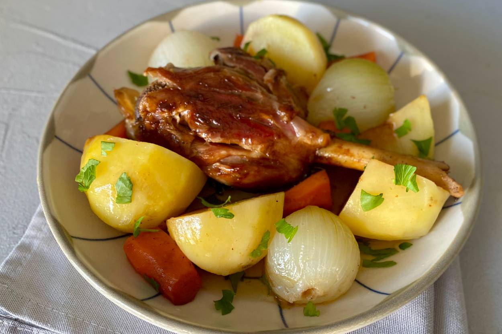

Kuzu İncik Tarifi İçin Malzemeler

Kuzu İncik Tarifi İçin Malzemeler
- 2
adet
kuzu incik (500'er gramlık)
- 5
yemek kaşığı
zeytinyağı
- 1
yemek kaşığı
tereyağı
- 100
gram
arpacık soğan
- 4
diş
sarımsak
- 2
adet
orta boy patates
- 2
adet
orta boy havuç
- 1
adet
kereviz sapı
- 4
su bardağı
sıcak su
- 1
adet
defne yaprağı
- 1
dal
biberiye
- 1/2
tatlı kaşığı
tane karabiber
- 1
çay kaşığı
tuz
Servisi için:
- 1/4
demet
maydanoz
Kuzu İncik Tarifinin Püf Noktası
İncikleri bol suda yıkadıktan sonra kızartma işlemi öncesinde mutlaka kurulayın.Arpacık soğanları sıcak suda bekletirseniz kabukları kolayca soyulacaktır.Kemikli ve büyük parça olan etlere mühürleme işlemi yaparken etleri kısa sürede çevirmeyin. Aksi takdirde tencerenin dibine yapışacak ve kolaylıkla ayrılmayacaktır.
Kuzu İncik Tarifinin Pişirme Önerisi
Pişirme işlemini kısık ateşte, güveç tenceresinde ocak üzerinde de tamamlayabilirsiniz.Aromatik tatlardan hoşlanıyorsanız; defne yaprağının yanı sıra fırınladığınız etlere adaçayı ve çubuk tarçın ekleyebilirsiniz.
Kuzu İncik Tarifi Nasıl Yapılır?
- Kabuğunu soyduğunuz patatesleri ortadan ikiye bölün, havuçları ve kereviz sapını iri parçalar halinde doğrayın. Arpacık soğan ve sarımsakların kabuklarını soyduktan sonra bütün olarak bir kenarda bekletin.
- Zeytinyağını derin bir tencerede kızdırın. Kuzu incikleri dikkatli bir şekilde tencereye yerleştirin.
- Yüksek ateşte, her bir tarafını en az 3 dakika pişirip, bir et çatalı yardımıyla etleri alt üst edin.
- Mühürlenen etlere, arpacık soğan ve sarımsakları ekleyin. Doğradığınız patates, havuç ve kereviz sapını da katıp etin kendi yağı ve suyunda tüm malzemeyi çevirin.
- Kök sebzeler, arpacık soğan ve sarımsaklarla kızaran eti, ısıya dayanıklı bir fırın kabına alın.
- Sıcak suyu fırın tepsisine aktarın. Defne yaprağı, biberiye, tane karabiber, tuz ve etin suyuna bir parça kıvam ve aroma vermesi için tereyağı ekleyin.
- Fırın kabının üzerini bir parça yağlı kağıt ile sıkıca kapatın. İncikleri, önceden ısıtılmış 190 derece fırında 60 dakika kadar pişirin.
- Fırından aldığınız kuzu inciklerin pişirme kağıdını kaldırın. Etin üzerine suyundan gezdirin. Sebzeler ile birlikte porsiyon olarak servis tabağına aldığınız kuzu inciği, ince ince doğranmış maydanoz ile servis edin. Sevdiklerinizle paylaşın.
- Kalan muhallebi dökülür ve üstü kapatılarak dolaba kaldırılır ve soğuduktan sonra kakao elenerek süslenir.
- Afiyet olsun 😍.